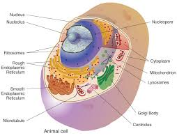

A student became curious about how food affects the body, why diseases occur, and how health professionals help people recover. That curiosity led the student to Biology. Biology helps us understand life, health, nutrition, growth, and the human body.
Biology is the study of living organisms and life processes. It helps students understand human health, nutrition, genetics, growth, disease prevention, and environmental interactions.
As an SHS student, you may study topics such as:
Biology can lead to careers such as:
Many students think Biology is only for becoming a doctor. In reality, Biology opens opportunities in healthcare, nutrition, food science, public health, environmental science, biotechnology, and many other growing industries.
This is only a small introduction. If you want to understand how programmes connect to university courses, careers, opportunities, and future success, get a copy of:
The guide designed to help students make informed decisions about their future and discover opportunities they may never have considered.